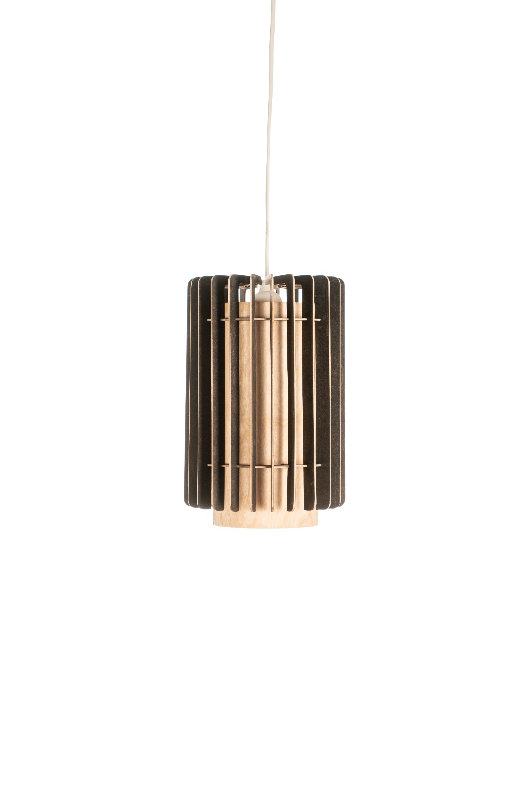
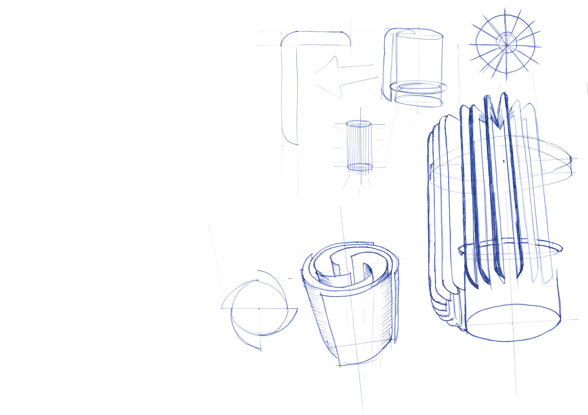
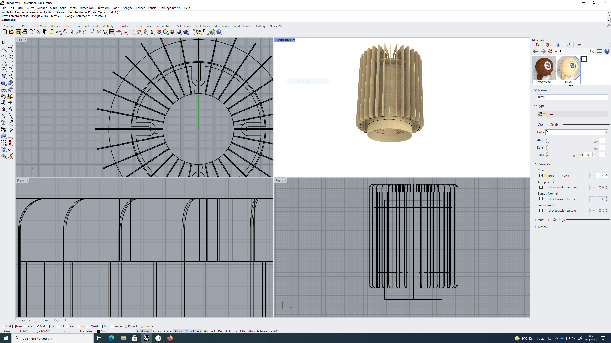
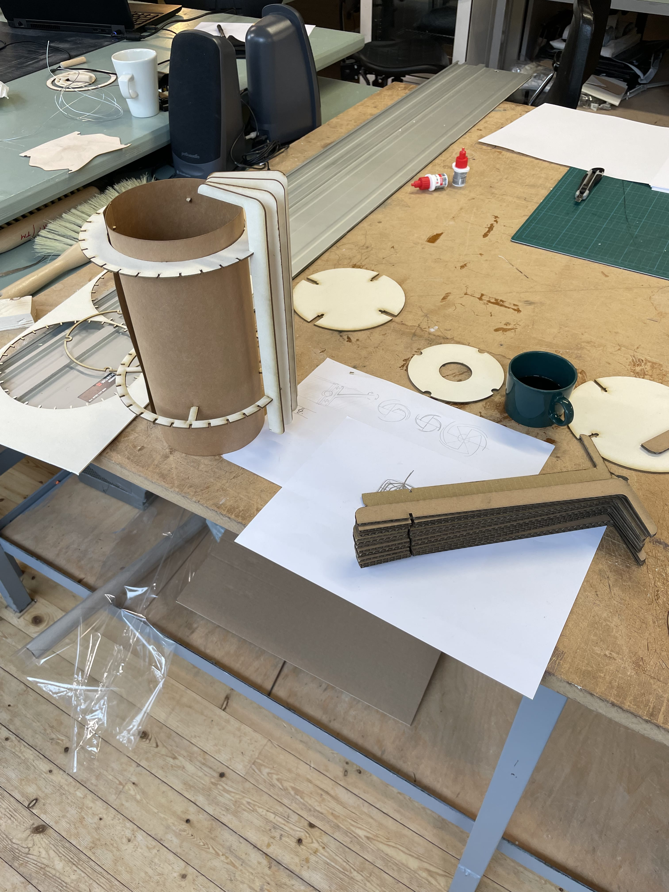
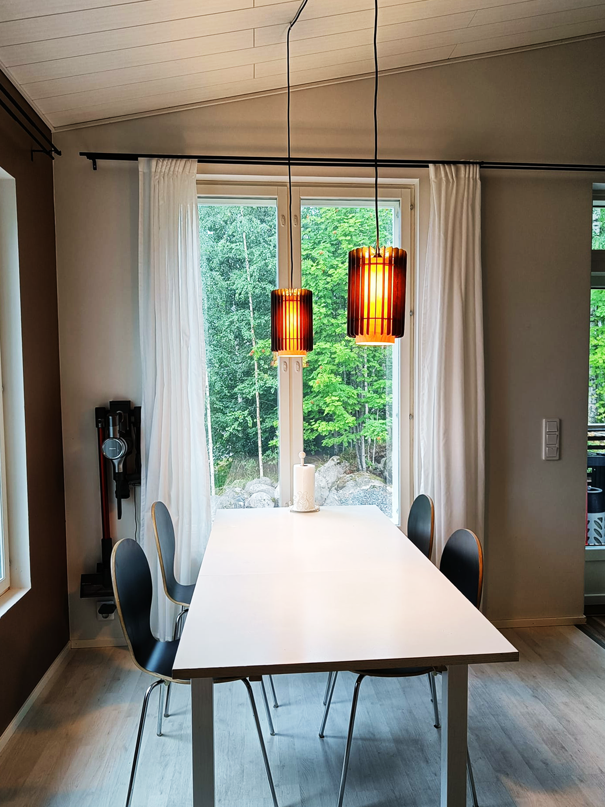

Ounasvaara Pendant Lamp

Inspired by Rovaniemi’s architecture and landscape, I designed the Ounasvaara Pendant Lamp as an exploration of how local identity can be translated into a simple, manufacturable product. The design draws from Alvar Aalto’s architecture and Ounasvaara, a prominent outdoor destination in the centre of Rovaniemi.
The lamp was developed using only 1–2 mm plywood and a limited set of tools. Multiple iterations and physical prototypes were used to refine the form and develop a construction method that could be produced simply and repeatably, while creating the desired atmosphere.



